Lec 16: Outliers
0.1 Review: Lecture 01-06
- Lectures 01-06: SLR: least squares estimate, inference (CI, prediction, t-test, F-test), diagnostics, transformations, ANOVA, lack of fit test.
- Lectures 07-11: Multiple Linear Regression (MLR).
- Lecture 11: multicollinearity
- Lecture 12: categorical predictors
- Lecture 13: Interactions
- Lectures 14-15: Model Selection
- Lecture 16: Outliers
1 Review & Outline
- Exhaustive search for best subset selection
- Automatic model selection: forward selection, backward elimination, stepwise selection
- Selection criteria:
- adjusted R-squared,
- Mallows’ Cp,
- AIC
- BIC
- PRESS, a special case of cross-validation
1.1 Outline
- Extreme observations
- Outliers in predictors
- Leverage and the hat matrix \(H\)
- Detecting leverage points
- Outliers in response
- residuals
- standardized residuals
- studentized residuals
2 Extreme Obs
2.1 Extreme Observations
An observation with an extreme value for one or more variables is called an extreme observation.
Extreme observations can be of two types:
- Outliers in the response variable \(Y\)
- Outliers in the predictor variables \(X\)
2.2 Example: Simulation
Code
set.seed(123)
n <- 7
p <- 2
X1 <- rnorm(n)
X2 <- rnorm(n)
Y <- 3 + 2 * X1 - 1 * X2 + rnorm(n)
data <- data.frame(Y, X1, X2)
# Add an extreme observation in both predictors and Y
data <- rbind(data, data.frame(Y = 20, X1 = 5, X2 = 5))
# Add an extreme observation in Y only
data <- rbind(data, data.frame(Y = 25, X1 = 0, X2 = 0))
# Add an extrem observation in X1 only
data <- rbind(data, data.frame(Y = 3, X1 = 6, X2 = 0))
#draw scatter plots such that the outliers are in red color
plot(data$X1, data$Y, main="Y vs X1", pch=19, xlab="X1", ylab="Y",
col=c(rep(1,n), rep(2,3)), ylim=c(min(data$Y)-5, max(data$Y)+10))
text(data[-c(1:n),]$X1, data[-c(1:n),]$Y, labels=(n+1):10, pos=3)2.3 Example of Extreme Observations
- 8: outliers in both \(X_1\) and \(Y\).
- 9: outlier in \(Y\) but no \(X_1\).
- 10: outlier in \(X_1\) but not \(Y\).
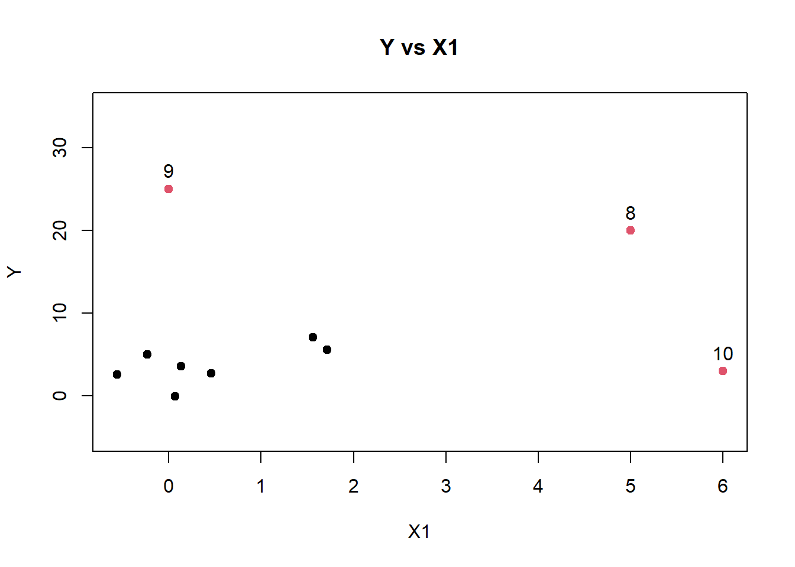
2.4 Example of Extreme Observations
- 8: outlier in both \(X_2\) and \(Y\).
- 9: outlier in \(Y\) but no \(X_2\).
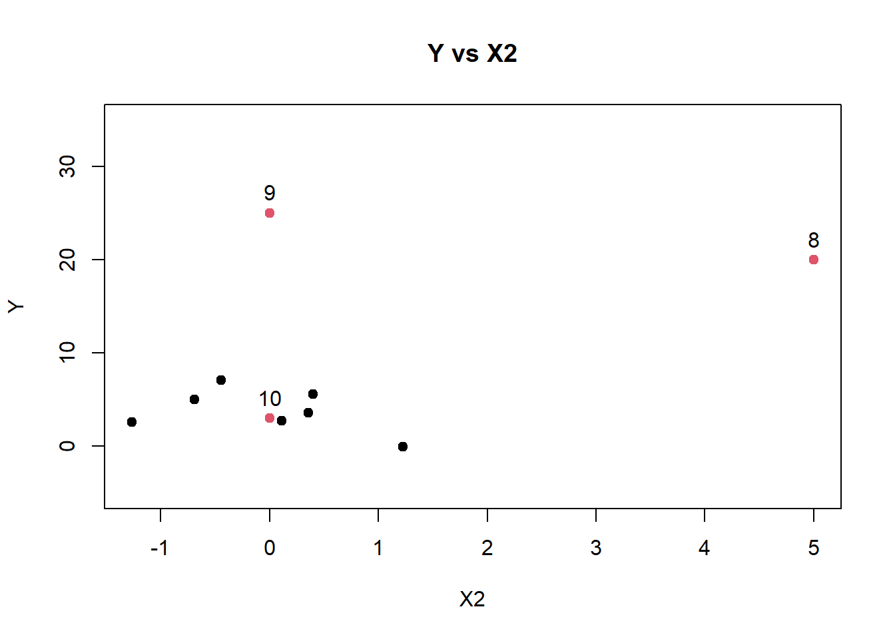
2.5 Example of Extreme Observations
- 8 and 10: outliers in the predictor space.
- 9: not an outlier in the predictor space.
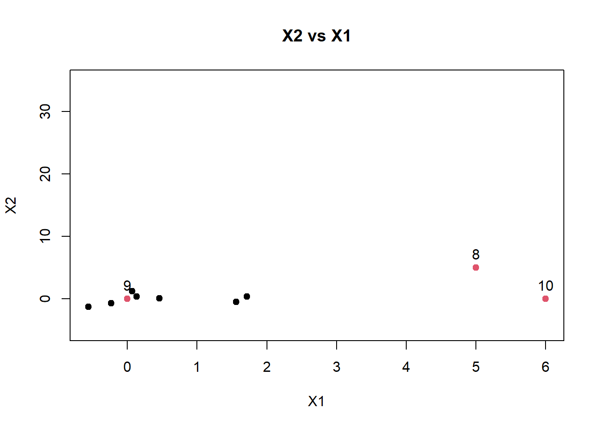
2.6 Residuals and Extreme Observations
We have discussed how to use residuals to detect outliers in the response variable \(Y\). \[e_i = y_i - \hat y_i\]
However, extreme observations in the predictor variables \(X\) may not have large residuals.
Visualization might not be able to detect extreme observations when there are multiple predictors.
2.7 Residuals and Extreme Observations
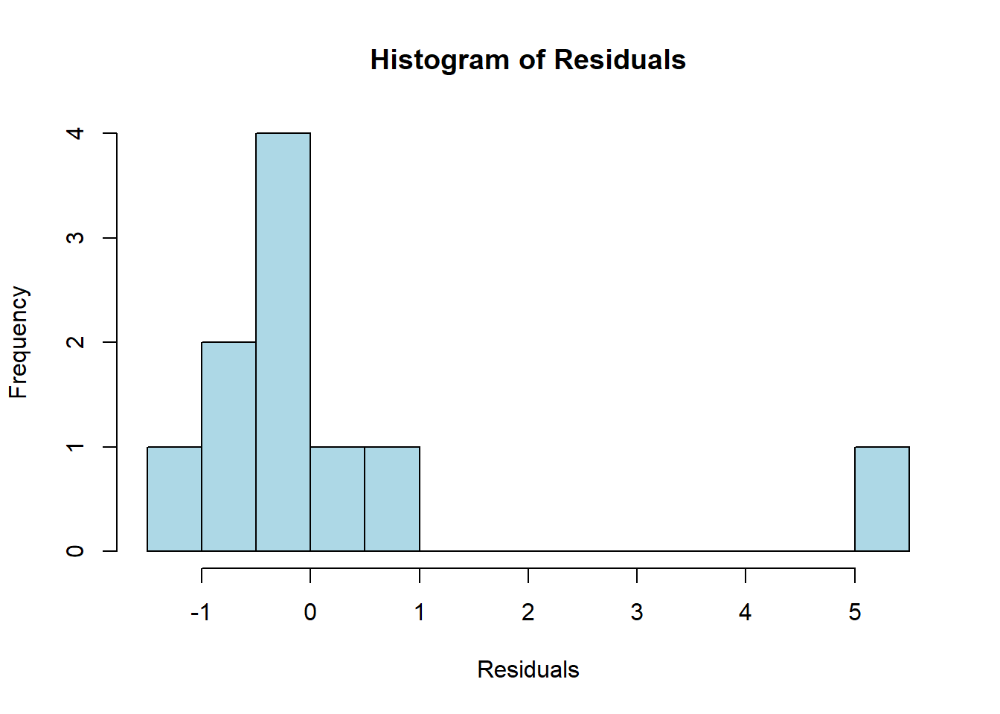
2.8 Residuals and Extreme Observations
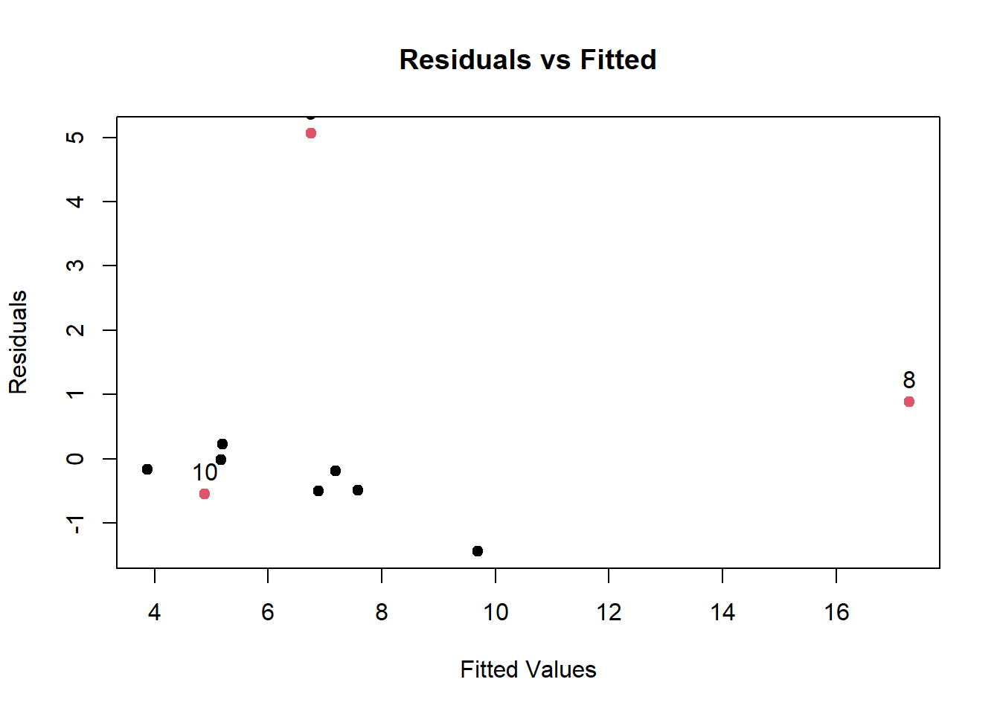
3 Leverage
3.1 Leverage
- To detect extreme observations in the predictor variables \(X\), we can use the concept of leverage.
- The leverage of an observation measures how far away the values of the predictor variables are from their means.
- The leverage values are the diagonal elements of the hat matrix \(H\): \[H = X(X^TX)^{-1}X^T\]
3.2 The Hat Matrix
- Recall that \(\hat y = Hy\), where \(H\) is the hat matrix. So
\[\hat y= Hy = \begin{pmatrix} h_{11} & h_{12} & \cdots & h_{1n} \\ h_{21} & h_{22} & \cdots & h_{2n} \\ \vdots & \vdots & \ddots & \vdots \\ \color{red}{h_{i1}} & \color{red}{h_{i2}} & \color{red}{\cdots} & \color{red}{h_{in}} \\ \vdots & \vdots & \ddots & \vdots \\ h_{n1} & h_{n2} & \cdots & h_{nn} \end{pmatrix} \begin{pmatrix} y_1 \\ y_2 \\ \vdots \\ y_n \end{pmatrix} = \begin{pmatrix} h_{11}y_1 + h_{12}y_2 + \cdots + h_{1n}y_n \\ h_{21}y_1 + h_{22}y_2 + \cdots + h_{2n}y_n \\ \vdots \\[6pt] \color{red}{h_{i1}y_1 + h_{i2}y_2 + \cdots + h_{in}y_n} \\[6pt] \vdots \\ h_{n1}y_1 + h_{n2}y_2 + \cdots + h_{nn}y_n \end{pmatrix} \]
3.3 The Hat Matrixand Leverage
so the \(i\)th fitted value \(\hat y_i\) can be expressed as: \[\hat y_i =\sum_{j=1}^n h_{ij} y_j=h_{ii} y_i + \sum_{j \neq i} h_{ij} y_j\]
Therefore, the \(i\)th leverage value \(h_{ii}\) measures the influence of the \(i\)th observation on its own fitted value \(\hat y_i\).
This shows that the fitted value \(\hat y_i\) is a weighted average of all the observed values \(y_j\), with the weight for \(y_i\) being \(h_{ii}\) (leverage).
A larger leverage value \(h_{ii}\) means that the observation \(i\) has more influence on its own fitted value \(\hat y_i\).
3.4 Properties of Leverage Values
- The leverage values \(h_{ii}\) have the following properties:
- \(0 \leq h_{ii} \leq 1\) for all \(i = 1, 2, \ldots, n\).
- The sum of the leverage values is equal to the number of regression coefficients in the model (including the intercept): \[\sum_{i=1}^n h_{ii} = \tilde p\] where \(\tilde p\) is the number of regression coefficients.
- The average leverage value is \(\frac{\tilde p}{n}\).
3.5 The Hat Matrix in SLR
- In simple linear regression (\(\tilde p=2\)), leverage is about the distance of an observation from the center of \(X\).
- Consider the example with the predictor \(X_1\). The hat matrix is given by:
\[ H = X(X^TX)^{-1}X^T = \frac{1}{n}\begin{bmatrix} 1 & x_{11} \\ 1 & x_{21} \\ \vdots & \vdots \\ 1 & x_{n1} \end{bmatrix} \begin{bmatrix} n & \sum_{i=1}^n x_{i1} \\ \sum_{i=1}^n x_{i1} & \sum_{i=1}^n x_{i1}^2 \end{bmatrix}^{-1} \begin{bmatrix} 1 & 1 & \cdots & 1 \\ x_{11} & x_{21} & \cdots & x_{n1} \end{bmatrix} .\] - After some math (matrix multiplication): \[H = \frac{1}{\sum_{i=1}^n (x_{i1} - \bar{x}_1)^2}\, \begin{bmatrix} 1 & x_{11} - \bar{x}_1 \\ 1 & x_{21} - \bar{x}_1 \\ \vdots & \vdots \\ 1 & x_{n1} - \bar{x}_1 \end{bmatrix} \begin{bmatrix} 1 & 1 & \cdots & 1 \\ x_{11} - \bar{x}_1 & x_{21} - \bar{x}_1 & \cdots & x_{n1} - \bar{x}_1 \end{bmatrix}.\] }
3.6 The Hat Matrix in SLR
- Reorganizing the hat matrix in SLR, we have: \[H = \begin{bmatrix} \frac{1}{n} + \frac{(x_{11} - \bar{x}_1)^2}{\sum_{i=1}^n (x_{i1} - \bar{x}_1)^2} & \cdots & \frac{1}{n} + \frac{(x_{11} - \bar{x}_1)(x_{n1} - \bar{x}_1)}{\sum_{i=1}^n (x_{i1} - \bar{x}_1)^2} \\[10pt] \vdots & \ddots & \vdots \\[10pt] \frac{1}{n} + \frac{(x_{n1} - \bar{x}_1)(x_{11} - \bar{x}_1)}{\sum_{i=1}^n (x_{i1} - \bar{x}_1)^2} & \cdots & \frac{1}{n} + \frac{(x_{n1} - \bar{x}_1)^2}{\sum_{i=1}^n (x_{i1} - \bar{x}_1)^2} \end{bmatrix}.\]
3.7 Leverage in SLR
- The diagonal elements of the hat matrix \(H\) are called the leverage values:
\[h_{ii} = \frac{1}{n} + \frac{(x_{i1} - \bar{x}_1)^2}{\sum_{j=1}^n (x_{j1} - \bar{x}_1)^2}.\]
- \(h_{ii}\) measures the distance of the \(i\)th observation from the center of \(X_1\).
3.8 Leverage in SLR
- leverage vs distance from the center of \(X_1\).
Code
# Example data
model <- lm(Y ~ X1, data=data)
leverage_values <- hatvalues(model)
# Plot leverage values vs distance from center of X1
center_X1 <- mean(data$X1)
scaled_distance_sq <- (data$X1 - center_X1)^2 / sum((data$X1 - center_X1)^2)
plot(scaled_distance_sq, leverage_values, main="Leverage vs Distance from Center of X",
xlab="Scaled Dist^2 from Center of Xs", ylab="Leverage", pch=19, col=c(rep(1,n), rep(2,3)))
abline(a=1/10, b=1)3.9 Leverage in SLR
- leverage vs (scaled and squared) distance from the center of \(X1\)
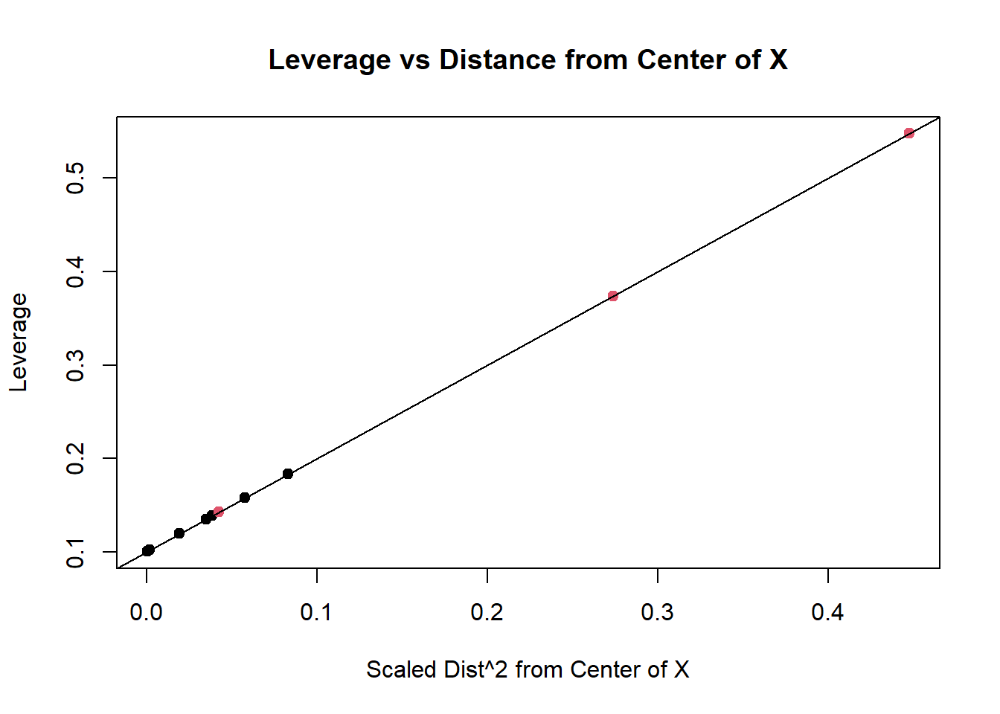
3.10 Leverage in MLR
- Consider the model
lm(Y ~ X1 + X2). - In multiple linear regression, leverage is about the statistical (Mahalonobis) distance of an observation from the center of the \(X\)-space: \[h_{ii}= \frac{1}{n} + \frac{(X_i - \bar{X})^T S_X^{-1} (X_i - \bar{X})}{n-1},\] where \(\bar{X}\) is the vector of mean predictor values, and \(S_X\) is the sample covariance matrix of the predictors.
3.11 Leverage in MLR
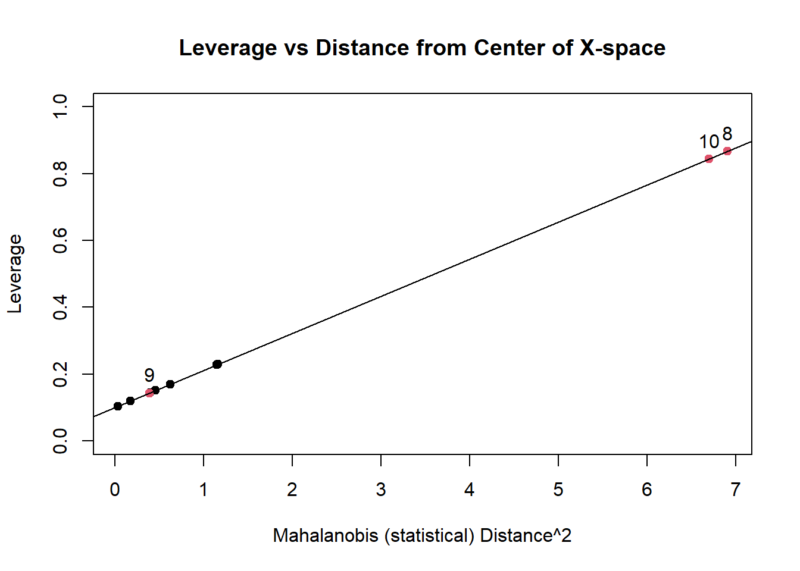
4 Detecting Leverage Points
4.1 Detecting outliers in predictors
- How large is large? Let \(\tilde p\) be the number of regression coefficients.
- Recall that \(\sum_{i=1}^n h_{ii} = \tilde p\), so the average leverage is \(\frac{\tilde p}{n}\).
- A common rule of thumb is that an observation is considered to have high leverage if its leverage value \(h_{ii}\) is greater than \(2\frac{\tilde p}{n}\) or \(3\frac{\tilde p}{n}\).
4.2 Detecting outliers: Example
- Consider
lm(Y~X1). - In this example, the average leverage is \(\frac{2}{10} = 0.2\).
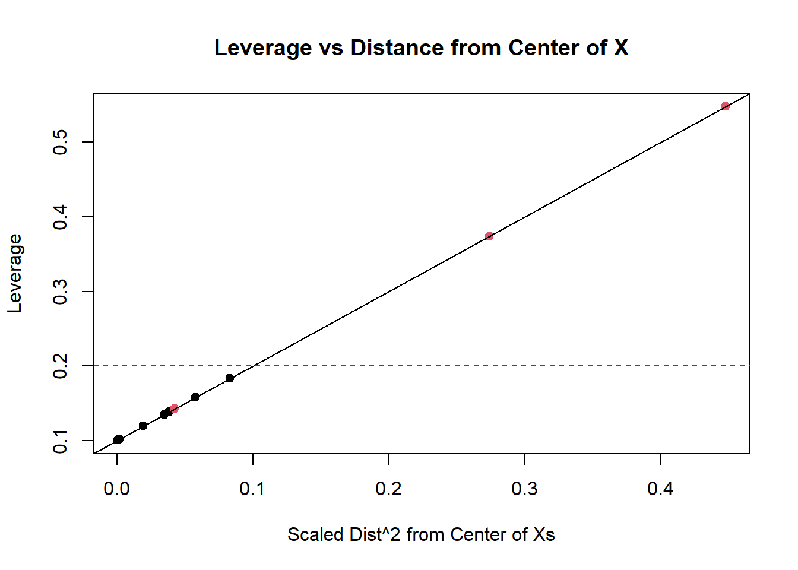
4.3 Detecting outliers: Example
- Consider
lm(Y~X1 + X2). - In this example, \(\tilde p=3\) and the average leverage is \(\frac{3}{10} = 0.3\).
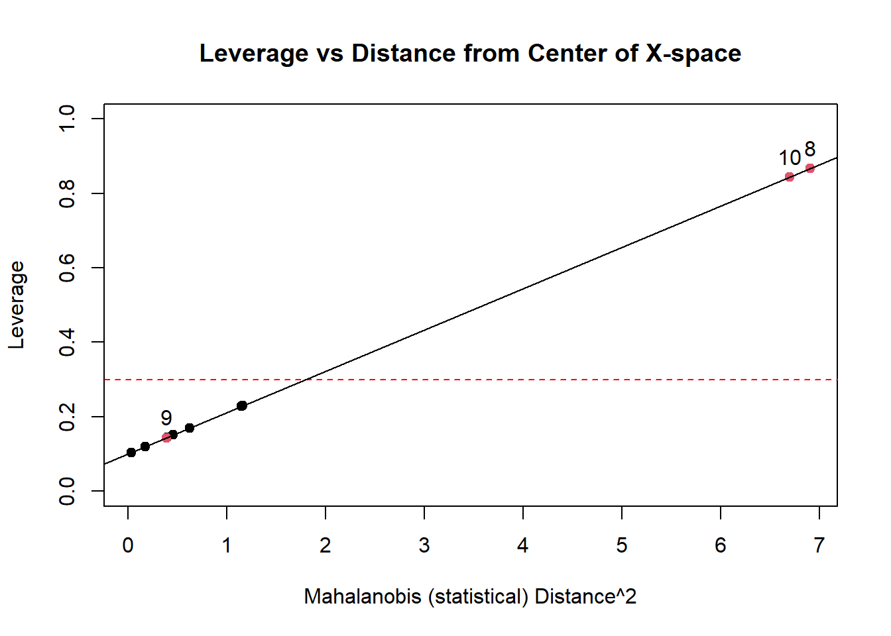
5 Outliers in \(Y\)
5.1 Outliers in Response: Residuals
Residuals are not very useful in detecting extreme observations in the predictor variables \(X\).
They are valuable in detecting outliers in the response variable \(Y\).
Recall that \(e=y - \hat y = (I-H)y\). Thus, the var-covariance matrix of the residuals is: \[\text{Var}(e) = (I - H)\text{Var}(y)(I - H)^T =\sigma^2 (I - H).\]
And the variance of the \(i\)th residual is: \[\text{Var}(e_i) = \sigma^2 (1 - h_{ii}).\]
In practice, we replace \(\sigma^2\) by \(MSE\) to estimate the variance of the residuals.
5.2 Standardized Residuals
- The standardized residuals are defined as: \[r_i = \frac{e_i}{\hat \sigma \sqrt{1 - h_{ii}}},\] where \(\hat \sigma = \sqrt{MSE}\) and \(h_{ii}\) is the leverage of the \(i\)th observation.
- The standardized residuals have constant variance.
- Thus, we can use the standardized residuals to detect outliers in the response variable \(Y\) by choosing a threshold, e.g., 2 or 2.5 in absolute value.
5.3 Deleted Residuals
- One issue with standardized residuals is that the estimate of \(\sigma\) includes the \(i\)th observation itself.
- The deleted residuals (or externally studentized residuals) address this issue by deleting the \(i\)th observation when estimating \(\sigma\).
- Let \(e_{(i)}\) be the residual for the \(i\)th observation obtained by fitting the model without the \(i\)th observation. It is defined as \[e_{(i)} = y_i - \hat y_{(i)},\] where \(\hat y_{(i)}\) is the fitted value when observation \(i\) is deleted.
5.4 Deleted Residuals
One does not need to refit models to obtain the deleted residuals. It can be shown that: \[e_{(i)} = \frac{e_i}{1 - h_{ii}}.\]
Recall that \(h_{ii}\) is between 0 and 1.
The larger the leverage \(h_{ii}\) (close to 1), the larger the deleted residual \(e_{(i)}\) compared to the ordinary residual \(e_i\).
The standard error of the deleted residual is: \[\text{SE}(e_{(i)}) = \hat \sigma_{(i)} \sqrt{1 - h_{ii}},\] where \(\hat \sigma_{(i)}\) is the estimate of \(\sigma\) obtained by deleting the \(i\)th observation.
5.5 Studentized Residuals
- We then define the studentized residuals based on the deleted residuals and its standard error:
\[t_i = \frac{e_{(i)}}{\text{SE}(e_{(i)})} = \frac{e_i / (1 - h_{ii})}{\hat \sigma_{(i)} \sqrt{1 - h_{ii}}} = \frac{e_i}{\hat \sigma_{(i)} \sqrt{1 - h_{ii}}}.\]
where \(\hat \sigma_{(i)}=\sqrt{MSE_{(i)}}\) is the estimate of \(\sigma\) obtained by deleting the \(i\)th observation.
- It can be shown that \(t_i \sim t_{df?}\). What is
dfhere when there are \(\tilde p\) regression coefficients?
5.6 Studentized Residuals: t-distribution
- The
dfdepends on the degrees of freedom used to estimate \(\sigma^2\). - When the \(i\)th observation is deleted, the degrees of freedom becomes \((n-1)-\tilde p = n-\tilde p-1\).
- Thus, the studentized residuals follow a \(t\) distribution with \(n-\tilde p-1\) degrees of freedom: \[t_i \sim t_{n-\tilde p-1}.\]
- Note , \(MSE_{(i)}\) can also be computed from \(MSE\) without refitting the model. It can be shown that: \[MSE_{(i)} = \frac{(n-\tilde p)MSE - e_i^2/(1-h_{ii})}{n-\tilde p-1}.\]
5.7 Studentized Residuals: Cutoff
If we want to test whether an observation is an outlier in \(Y\) at significance level \(\alpha\), we can use the following cutoff:
\[|t_i| > t_{1- \alpha/2, n-\tilde p-1}.\]
In practice, we do not know which observation is an outlier. Thus, we need to adjust for multiple comparisons. A common approach is to use the Bonferroni correction. The adjusted cutoff becomes:
\[|t_i| > t_{1- \alpha/(2n), n-\tilde p-1},\] which is greater than the previous cutoff.
5.8 Example
- We will look at residuals, standardized residuals, and studentized residuals for the model
lm(Y ~ X1 + X2).
5.9 Example: residuals
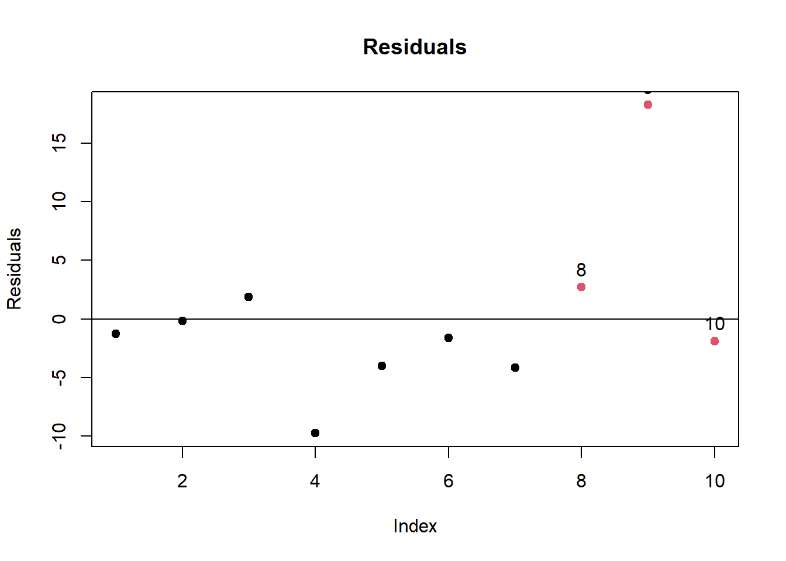
5.10 Example: standardized residuals
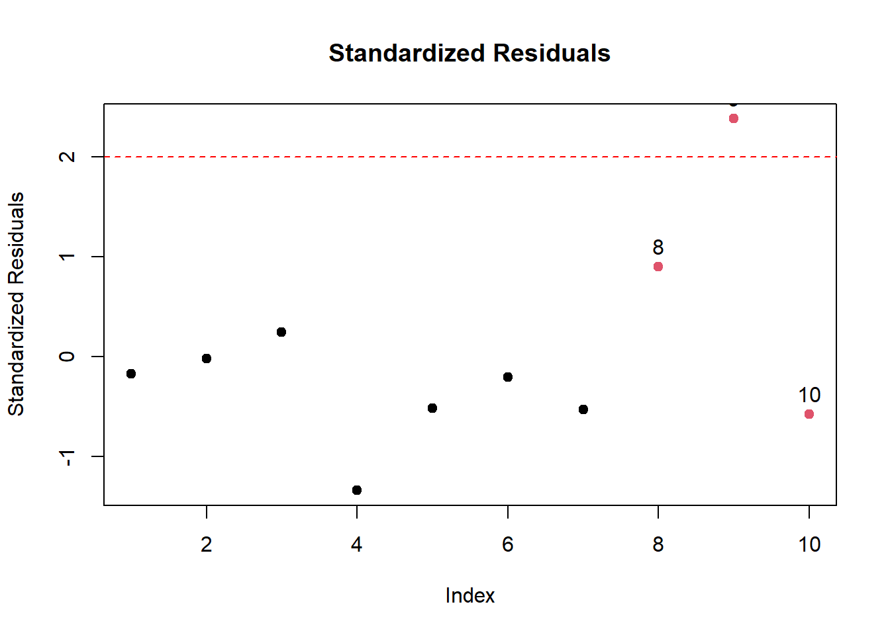
5.11 Example: studentized residuals
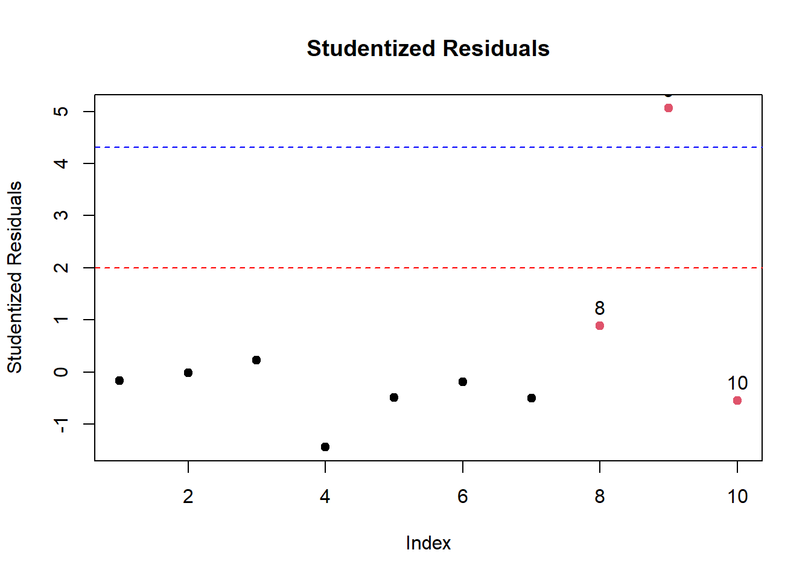
6 Summary
6.1 Summary
- For outlier in predictor: leverage
- Leverage measures how far an observation is from the center of the X-space.
- Leverage values are the diagonal elements of the hat matrix.
- An observation is considered to have high leverage \(h_{ii}> 2\frac{\tilde p}{n}\) or \(3\frac{\tilde p}{n}\), where \(\tilde p\) is the number of regression coefficients.
- For outlier in response: studentized residual
- Studentized residuals are based on deleted residuals.
- They follow a t-distribution with \(n-\tilde p-1\) degrees of freedom.
- An observation is considered an outlier in Y \[|t_i| > t_{1- \alpha/(2n), n-\tilde p-1}.\]